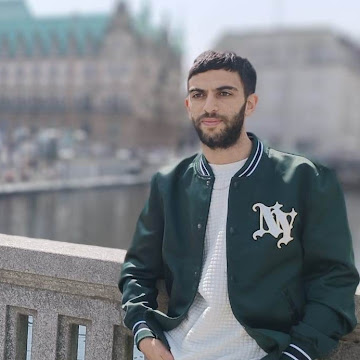

Lebenslauf
Ahmed Oueslati
Junior Web Developer

Geburtsdatum:
22.07.1993
Staatsangehörigkeit:
tunesisch
Geschlecht:
männlich
BERUFSERFAHRUNG:
- 2018 - 2021 Tunis, Tunesien : CALL-CENTER ANGESTELLTER TCC - TUNIS CALL CENTER
- 2021 - 2024 Schwerin, Deutschland : IT-ADMINISTRATOR
ALLGEMEINE UND BERUFLICHE BILDUNG:
- 06.2012 Gaafour, Tunesien:
ABITUR IN FACHBEREICH : TECHNIKWISSENSCHAFTEN
- 03.2015 – 05.2018 Tunis, Tunesien:
BEFÄHIGUNGSBESCHEINIGUNG VOM FACHTECHNIKER (MARKETING UND MULTIMEDIA)
SPRACHKENNTNISSE
- Mutterspracher:
Arabisch
- Fremdsprachen:
Fransösisch (B2)
Englisch (B1)
Deutsch (B1)
DIGITALE KOMPETENZEN
C#, Python, HTML, CSS, Java Script - Grundkenntnisse WordPress Editor Kenntnisse Adobe photoshop
HOBBIES
CONTACT